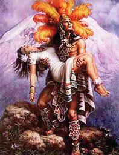

Conocidos como “el Popo” y “la mujer dormida”, los volcanes Popocatépetl e Iztaccíhuatl han dado lugar a diferentes leyendas, especialmente relacionadas con su origen.
En esta antigua leyenda maya el amor y la desgracia de los enamorados son la causa del nacimiento de los volcanes. Se trata de una historia que, con el tiempo, ha dado pie a creaciones como El idilio de los volcanes del poeta peruano José Santos Chocano.
Dice una antigua leyenda que los volcanes Popocatépetl e Iztaccíhuatl, de los más altos de México, representan a una doncella y un joven guerrero Tlaxcaltecas. Iztaccíhuatl era la princesa más bella y se enamoró del guerrero Popocatépetl, uno de los más valientes de su pueblo.
Antes de partir a la guerra en la que los Tlaxcaltecas se encontraban inmersos frente a los aztecas, el joven guerrero pidió la mano de la doncella Iztaccíhuatl. El cacique le concedió su deseo, a cambio de que volviera sano y salvo del conflicto.
Mientras Iztaccihuatl esperaba el regreso de su amado, un rival de Popocatépetl engañó a la joven y le dijo que el muchacho había fallecido en la guerra. Entonces, la princesa murió de tristeza en poco tiempo.
Cuando Popocatépetl regresó victoriosos del combate, recibió la mala noticia. Durante días y noches el joven vagó por la ciudad pensando cómo podía honrar el gran amor que se habían tenido. Así fue como ordenó construir una gran tumba bajo el sol amontonando 10 cerros para levantar una enorme montaña.
Entonces, tomó el cuerpo de la princesa y la recostó en la cima de la montaña. Allí, la besó por última vez para después, con una antorcha humeante en la mano, arrodillarse a velar por su sueño eternamente.
Desde entonces permanecen juntos uno frente a otro y, con el tiempo, la nieve cubrió sus cuerpos convirtiéndolos en dos enormes volcanes.